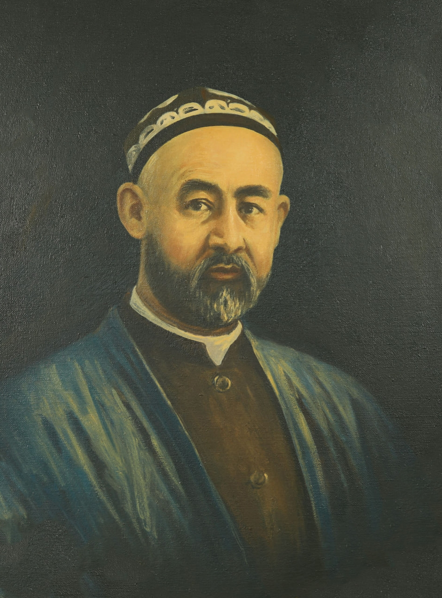
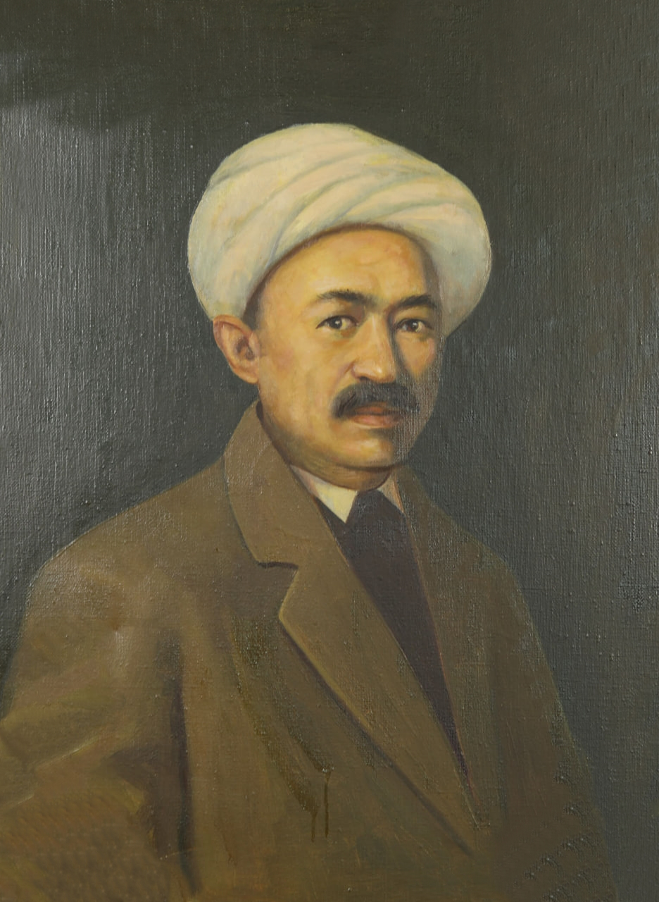
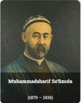

«Ozod turk bayrami»
Ko'z oching, boqmangiz qorong'ulikka,
G'aflatda yotmoqni o'ylamang aslo.
Hurriyat quyoshi nur sochar bugun,
Yashasin Turkiston, yashasin dunyo!

«Mirrix yulduziga»
Go'zal yulduz, nurli yulduz, ko'klam yulduzi,
Qora tunda yo'l yo'qotgan elning ko'zi sen.
Zulmat ichra yonib turgan mangu shamchiroq,
Erk istagan bu xalqimning dildosh do'sti sen!

«Umid uchqunlari»
Biz yoshlarmiz, kelajakning egalarimiz,
Ilm olib el koriga yaragaymiz biz.
Bosh egmaymiz zulm oldida aslo, hech qachon,
Millat nomusini baland tutgaymiz har on!

1918Yurt qayg'usi - Abdurauf Fitrat
'Ey ulug' Turon, arslonlar o'lkasi! Senga ne bo'ldi?...' Muxtoriyat fojiasidan keyin yozilgan otashin marsiya.
O'qish 1917
1917
Muxtoriyat marshi - Abdulla Avloniy
'Yashasun Turkiston muxtoriyati!' Millatning uyg'onishi va ozodlik tantanasiga bag'ishlangan jangovar she'r.
O'qish
1918Ozodlik tongi - So'fizoda
Erk, millat birligi va ma'rifat orqali zulmat kishanlarini parchalashga chorlovchi diltortar satrlar.
O'qish